| 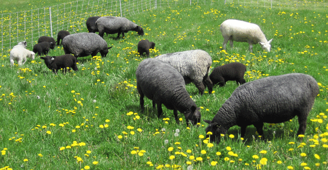 | |||||||||||||||||||||||
| Grazing |
To be healthy, sheep need good-quality grazing… grass and forage plants, and browse.
|
||||||||||||||||||||||
| Photo above: Diverse grass and plants thrive on managed pasture where sheep are moved every day to a new area. They regraze areas only when the plants have regrown (21 to 40 days). Manure, urine and trampled plants support soil microorganisms which feed the plants. Soil structure improves and the pasture can withstand dry and wet periods. Parasites are reduced, when sheep move every day, and regraze areas after 21 days or more. | |||||||||||||||||||||||
| Photo below: Poor pasture management. These cows have been on the same pasture all summer, year after year. They eat their favorite plants, and when the plants start to regrow, eat them again and again. The plants stop growing as they have no leaves to make energy to grow roots and no roots to grow leaves. Less palatable plants grow bigger and are not grazed. They eventually take over the field. Overgrazed areas, with little vegetation and uncovered soil, that are exposed to hot summer sun will bake, causing severe damage to the soil and soil microorganisms.
There is very little for these cows to eat in this pasture. Hungry animals break through fences in desperation to find food to eat. If they can’t find enough food, they will get sick, be susceptible to worms, reproductive problems, etc. |
|||||||||||||||||||||||
| Sheep are enthusiastic energetic grazers. | |||||||||||||||||||||||
| 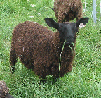 | |||||||||||||||||||||||
| 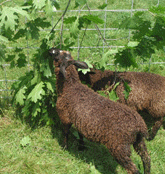 | |||||||||||||||||||||||
| Sheep are also browsers and eat shrubs, tree leaves and pine needles and bark. | |||||||||||||||||||||||
| 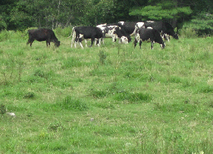 | |||||||||||||||||||||||
| About pastures: Pastures that have been overgrazed, brush hogged (full of stubble, with little or no grass, legumes and other mixed forages), hayed forever (no amendments added) or newly cleared woods, will lead to problems raising healthy sheep. The sheep will not have enough to eat.
Plus, there is slowing of grass growth in July and August by the hot summer sun, or abnormal dry and sometimes wet periods. You may need twice as much land to graze during dry times. If the grass stops growing, you will need to feed hay in the summer! |
|||||||||||||||||||||||
| 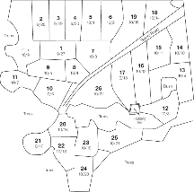 | Pasture grazing maps are valuable tools to plan how the area will be grazed, and record feedback as to what happened when it was grazed. Size of paddocks, and rotation depend on: rate of grass growth from weather, (rain, dry, cold, hot), season/sunshine (spring, summer, fall), type of forage, soil type (clay, sandy loam, gravel), and regrowth from the last grazing. Forage and soil are not the same everywhere in the pasture! This map shows a 25 day grazing rotation in fall when the grass is growing slow. Each paddock is numbered and dated. In spring, with rain, there would be more paddocks and smaller in size, as the grass is taller and thicker (more to eat). |
||||||||||||||||||||||
|
Equipment, Managing and Handling Sheep
|
I went on many pasture walks at farms in New England. Farmers with greenhouse barns felt they were a healthier environment for their animals than regular barns or sheds. We built a Harnois Ovaltech 21’ x 24’ greenhouse from a kit. This brand had strong supporting oval arches and strong bracing. It has a double plastic roof with a fan to blow air between the plastic. Inside it is dry, there is no dripping condensation. I added 70% shade cloth panels on the open ends to keep out blowing rain and snow. When not in use they roll up. A snow rake makes removing snow loads from the greenhouse easy. It is wonderful shelter for sheep in winter, lambing, shearing, storage of bedding straw and equipment. |
||||||||||||||||||||||
| 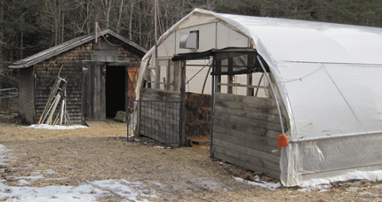 | |||||||||||||||||||||||
| Left, a 16’ x 16’ shed for hay storage. | |||||||||||||||||||||||
| 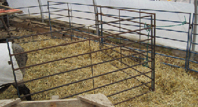 | |||||||||||||||||||||||
| 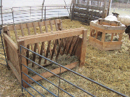 | We built two wood hay feeders that stay in the barn. They are heavy so the sheep will not push them around. | ||||||||||||||||||||||
| Metal moveable fencing panels, two linked 5’ sections (10’ total) come with connecting rods for combining more sections. Its very useful for setting up permanent or temporary areas in the barn or outside. Heavy-weight metal, the sheep will not push, break or bend it. (Next time, I would buy long-lasting galvanized metal, it is worth the extra cost). When my sheep are at a different location and I need a handling area, these panels fit in my car and are easy to assemble. Sheep need to be in a small pen for handling, so they can be haltered for checking, treating, hoof trimming, coats, etc. The fencing needs to be metal or heavy wood, so sheep cannot push against, push and go under, or jump over. Do not use electric portable fencing to contain sheep in a small area. They will become entangled trying to get out, a dangerous situation. |
|||||||||||||||||||||||
| 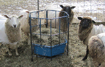 | |||||||||||||||||||||||
| 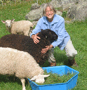 | |||||||||||||||||||||||
| Portable, sturdy Sydell hay feeders are in three sections with connecting rods and a plastic tub. The tub can be used as a temporary feeder. Easy to move and set up anywhere. | |||||||||||||||||||||||
| 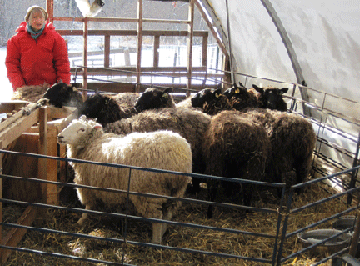 | |||||||||||||||||||||||
| 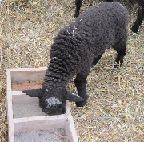 | |||||||||||||||||||||||
| Pine wood boxes hold minerals and salt. To keep them dry, outside boxes are covered at night, and brought inside during rainy weather. | |||||||||||||||||||||||
| 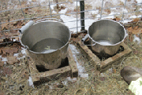 | |||||||||||||||||||||||
| I use stainless steel water buckets. Plastic buckets and pans leach chemicals into the water, especially in the hot summer sun. | |||||||||||||||||||||||
| For easy handling, put sheep in a pen. Working with sheep is easier if you let them eat first. Then make their pen smaller. When they are sitting down chewing cud, they are relaxed and you can usually walk up to them and put on a halter. It will be less stressful for the sheep. | |||||||||||||||||||||||
| 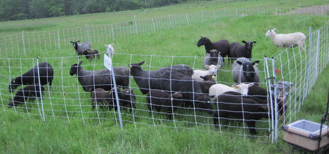 | |||||||||||||||||||||||
| Photo shows the use of flexible sheep netting and a solar charger. The netting is easy to move and configure to any area. | |||||||||||||||||||||||
| Electric Fencing Electric fencing comes in 80’ and 160’ rolls. When I started, Wellscroft Fence recommended a 42” height and a combination of 80’ and 160’ length rolls of Premier regular Electrostop and Quik Ground Electrostop netting. Because of the location of my grazing areas, I do not have a wired-in charger with a permanent ground rod. A solar charger works with the Quik Ground netting, as the ground wire is on the bottom and all the metal fence post spikes act as grounding rods. No grounding rod is needed! I have two sets of netting. One set for the area the sheep are grazing, and a second set for a new area to move the sheep into. Having extra netting is useful for making lanes to move sheep. Post “electric fence warning signs” by your fence. |
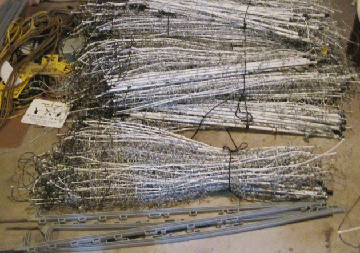 | ||||||||||||||||||||||
| Temporary pens can be used for handling sheep, for night time safety, or times of drought/wet when sheep need to be kept off pasture for a short time. Cattle panel fencing with metal posts set up quickly. Panels are temporarily fastened together with chains and clips. | 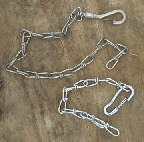 | ||||||||||||||||||||||
| 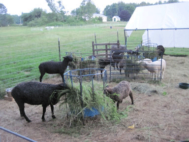 | |||||||||||||||||||||||
| 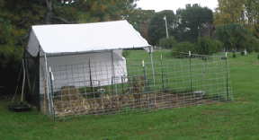 | |||||||||||||||||||||||